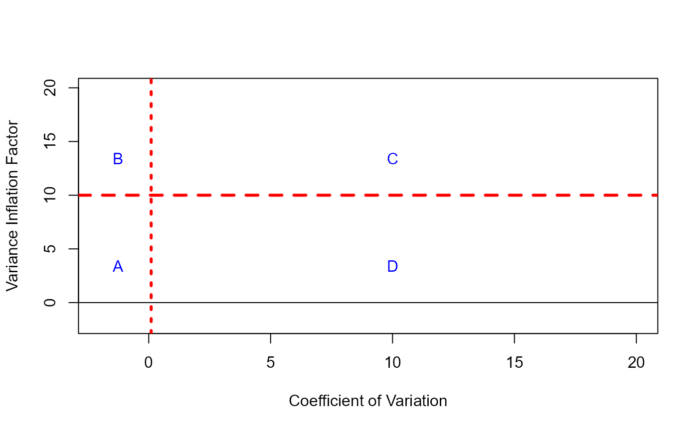
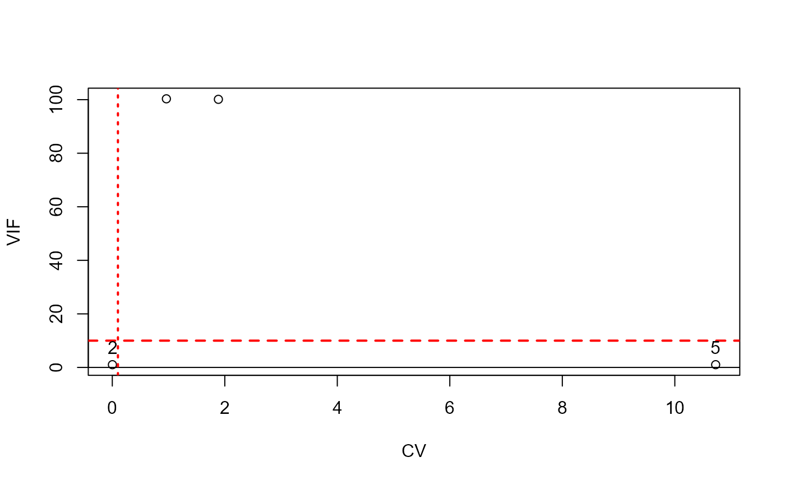

Scatterplot of CV vs VIF
plot.cv_vif.RdThis function provides a graphical representation of a scatter plot showing the Coefficient of Variation (CV) and the Variance Inflation Factor (VIF) for the independent variables (excluding the intercept) of a multiple linear regression model.
Usage
# S3 method for class 'cv_vif'
plot(x)Details
The distinction between essential and non-essential multicollinearity and the limitations of each measure (CV and VIF) for detecting the different kinds of multicollinearity, can be very useful for identifying whether there is a troubling degree of multicollinearity, and determining the kind of multicollinearity present and the variables causing it.
For this purpose, it is important to include the lines corresponding to the established thresholds for each measure in the representation of the scatter plot of the CV and VIF: a dashed vertical line for 0.1002506 (CV) and a dotted horizontal line for 10 (VIF). These lines determine four regions (see Example 1), which can be interpreted as follows: A: existence of troubling non-essential and non-troubling essential multicollinearity; B: existence of troubling essential and non-essential multicollinearity; C: existence of non-troubling non-essential and troubling essential multicollinearity; D: non-troubling degree of existing multicollinearity (essential and non-essential).
References
Salmerón, R., García, C.B. and García, J. (2018). Variance inflation factor and condition number in multiple linear regression. Journal of Statistical Computation and Simulation, 88:2365-2384, doi: doi:10.1080/00949655.2018.1463376 .
Salmerón, R., Rodríguez, A. and García, C.B. (2020). Diagnosis and quantification of the non-essential collinearity. Computational Statistics, 35(2), 647-666, doi: doi:10.1007/s00180-019-00922-x .
Salmerón, R., García, C.B., Rodríguez, A. and García, C. (2022). Limitations in detecting multicollinearity due to scaling issues in the mcvis package. R Journal, 14(4), 264-279, doi: doi:10.32614/RJ-2023-010 .
Author
R. Salmerón (romansg@ugr.es) and C.B. García (cbgarcia@ugr.es).
Examples
### Example 1
plot(-2:20, -2:20, type = "n", xlab="Coefficient of Variation",
ylab="Variance Inflation Factor")
abline(h=10, col="red", lwd=3, lty=2)
abline(h=0, col="black", lwd=1)
abline(v=0.1002506, col="red", lwd=3, lty=3)
#abline(v=0, col="red", lwd=1)
text(-1.25, 2, "A", pos=3, col="blue")
text(-1.25, 12, "B", pos=3, col="blue")
text(10, 12, "C", pos=3, col="blue")
text(10, 2, "D", pos=3, col="blue")

### Example 2
library(multiColl)
set.seed(2025)
obs = 100
cte = rep(1, obs)
x2 = rnorm(obs, 5, 0.01)
x3 = rnorm(obs, 5, 10)
x4 = x3 + rnorm(obs, 5, 1)
x5 = rnorm(obs, -1, 30)
x = cbind(cte, x2, x3, x4, x5)
plot(cv_vif(x))
abline(h=10, col="red", lwd=2, lty=2)
abline(h=0, col="black", lwd=1)
abline(v=0.1002506, col="red", lwd=2, lty=3)
labels = c()
for(i in 1:length(cv_vif(x)[[1]])){labels = c(labels, i+1)}
text(cv_vif(x)[[1]], cv_vif(x)[[2]], labels = labels, pos=3)

cv_vif(x) |> plot()
abline(h=10, col="red", lwd=2, lty=2)
abline(h=0, col="black", lwd=1)
abline(v=0.1002506, col="red", lwd=2, lty=3)
labels = c()
for(i in 1:length(cv_vif(x)[[1]])){labels = c(labels, i+1)}
text(cv_vif(x)[[1]], cv_vif(x)[[2]], labels = labels, pos=3)
### Example 3
### Graphical representation is not possible
head(SLM2, n=5)
#> y2 cte Z
#> 1 43.01204 1 9.978211
#> 2 40.04163 1 9.878235
#> 3 40.17086 1 9.924592
#> 4 40.79076 1 10.019123
#> 5 44.72774 1 10.104728
x = SLM2[,2:3]
plot(cv_vif(x))
#> At least 3 independent variables are needed (including the intercept in the first column) to carry out the calculations. The code 'plot(cv_vif(x))' or 'cv_vif(x) |> plot()' will fail.
cv_vif(x) |> plot()
#> At least 3 independent variables are needed (including the intercept in the first column) to carry out the calculations. The code 'plot(cv_vif(x))' or 'cv_vif(x) |> plot()' will fail.
### Example 4
### Computationally singular system
head(soil, n=5)
#> BaseSat SumCation CECbuffer Ca Mg K Na P Cu Zn
#> 1 2.34 0.1576 0.614 0.0892 0.0328 0.0256 0.010 0.000 0.080 0.184
#> 2 1.64 0.0970 0.516 0.0454 0.0218 0.0198 0.010 0.000 0.064 0.112
#> 3 5.20 0.4520 0.828 0.3306 0.0758 0.0336 0.012 0.240 0.136 0.350
#> 4 4.10 0.3054 0.698 0.2118 0.0536 0.0260 0.014 0.030 0.126 0.364
#> 5 2.70 0.2476 0.858 0.1568 0.0444 0.0304 0.016 0.384 0.078 0.376
#> Mn HumicMatter Density pH ExchAc Diversity
#> 1 3.200 0.1220 0.0822 0.516 0.466 0.2765957
#> 2 2.734 0.0952 0.0850 0.512 0.430 0.2613982
#> 3 4.148 0.1822 0.0746 0.554 0.388 0.2553191
#> 4 3.728 0.1646 0.0756 0.546 0.408 0.2401216
#> 5 4.756 0.2472 0.0692 0.450 0.624 0.1884498
x = soil[,-16]
plot(cv_vif(x))
#> System is computationally singular. Modify the design matrix before running the code. The code 'plot(cv_vif(x))' or 'cv_vif(x) |> plot()' will fail.
cv_vif(x) |> plot()
#> System is computationally singular. Modify the design matrix before running the code. The code 'plot(cv_vif(x))' or 'cv_vif(x) |> plot()' will fail.